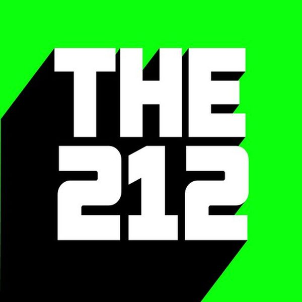
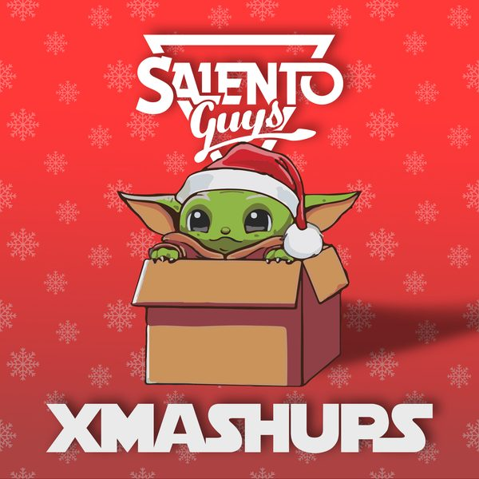

I 21 dischi
 1
Cross My Mind (feat. Greta)Jude & Frank
1
Cross My Mind (feat. Greta)Jude & Frank
 2
JustYourSoul (Tchami Remix)Valentino Khan & Diplo
2
JustYourSoul (Tchami Remix)Valentino Khan & Diplo
 3
Don't Call Me (Alex Kenji Remix)Danilo Secli
3
Don't Call Me (Alex Kenji Remix)Danilo Secli
 4
Rabbit Hole (Monkey Safari's Attention Mix)CamelPhat & Jem Cooke
5
Daydreams - Sultan x Shepard Echoes Of Life Extended RemixARTY, Cimo Frankel
4
Rabbit Hole (Monkey Safari's Attention Mix)CamelPhat & Jem Cooke
5
Daydreams - Sultan x Shepard Echoes Of Life Extended RemixARTY, Cimo Frankel
 6
Drum RollJohan S
6
Drum RollJohan S
 7
Know It's LoveLexa Hill
7
Know It's LoveLexa Hill
 8
To The FunkPaul Adam
8
To The FunkPaul Adam

9 212Joshwa (UK) 10
In Your Eyes - feat. AlidaRobin Schulz
10
In Your Eyes - feat. AlidaRobin Schulz
 11
Manifesto di una vita meravigliosaDiodato vs Passenger 10
11
Manifesto di una vita meravigliosaDiodato vs Passenger 10
 12
No LimitsG-Pol
12
No LimitsG-Pol
 13
DiwanGellero
13
DiwanGellero
 14
Congratulations ft. Brando (Don Diablo VIP Mix)Don Diablo
14
Congratulations ft. Brando (Don Diablo VIP Mix)Don Diablo
 15
Surrender feat. Liz Jai (Dario D'Attis Extended Remix)Mark Di Meo
15
Surrender feat. Liz Jai (Dario D'Attis Extended Remix)Mark Di Meo
 16
San Frandisco (Illyus & Barrientos Extended Remix)Dom Dolla
16
San Frandisco (Illyus & Barrientos Extended Remix)Dom Dolla
 17
The G.O.A.TOliver Heldens & Mesto
17
The G.O.A.TOliver Heldens & Mesto
 18
Soul FiftyChocolate Puma & Firebeatz
18
Soul FiftyChocolate Puma & Firebeatz
 19
Jacked UpReebs
20
IncrediblePromise Land x Dirty Ducks
19
Jacked UpReebs
20
IncrediblePromise Land x Dirty Ducks

21 House Monkey (Salento Guys Mashup)Tones and I vs HugelLa tracklist
- 1 Cross My Mind (feat. Greta) Jude & Frank Revuelta Records
- 2 JustYourSoul (Tchami Remix) Valentino Khan & Diplo Mad Decent
- 3 Don't Call Me (Alex Kenji Remix) Danilo Secli Hotfingers
- 4 Rabbit Hole (Monkey Safari's Attention Mix) CamelPhat & Jem Cooke RCA Records
- 5 Daydreams - Sultan x Shepard Echoes Of Life Extended Remix ARTY, Cimo Frankel Armada Music
- 6 Drum Roll Johan S Glasgow Underground
- 7 Know It's Love Lexa Hill Glasgow Underground
- 8 To The Funk Paul Adam Glasgow Underground
- 9 212 Joshwa (UK) Glasgow Underground
- 10 In Your Eyes - feat. Alida Robin Schulz WM Germany
- 11 Manifesto di una vita meravigliosa Diodato vs Passenger 10 Mashup
- 12 No Limits G-Pol Hexagon
- 13 Diwan Gellero Hexagon
- 14 Congratulations ft. Brando (Don Diablo VIP Mix) Don Diablo Hexagon
- 15 Surrender feat. Liz Jai (Dario D'Attis Extended Remix) Mark Di Meo Defected Records
- 16 San Frandisco (Illyus & Barrientos Extended Remix) Dom Dolla RCA Records
- 17 The G.O.A.T Oliver Heldens & Mesto HELDEEP Records
- 18 Soul Fifty Chocolate Puma & Firebeatz Spinnin' Records
- 19 Jacked Up Reebs Hysteria Records
- 20 Incredible Promise Land x Dirty Ducks SINKA RECORDS
- 21 House Monkey (Salento Guys Mashup) Tones and I vs Hugel DemoDrop